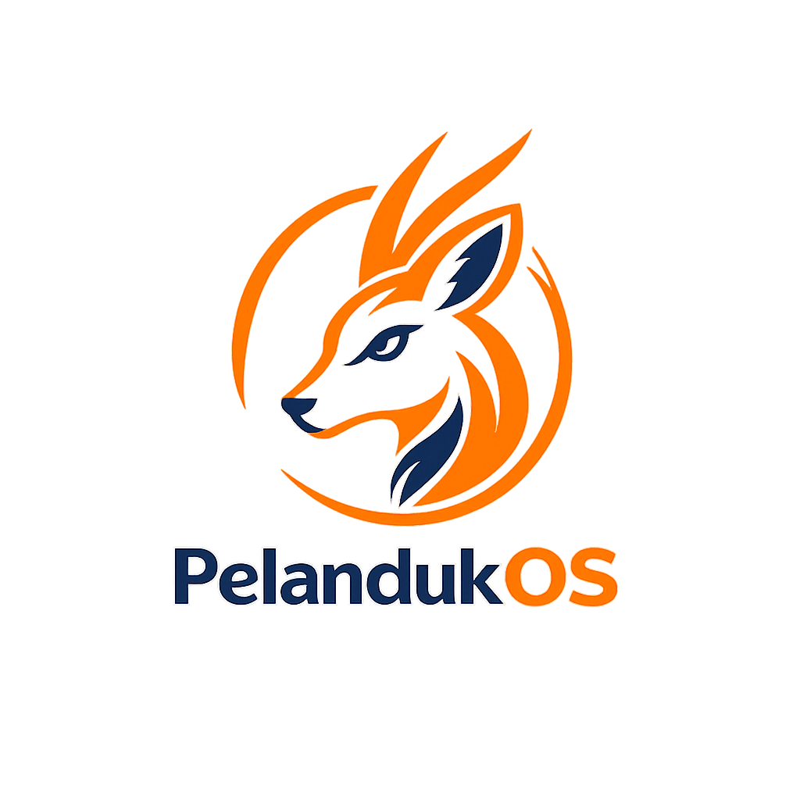
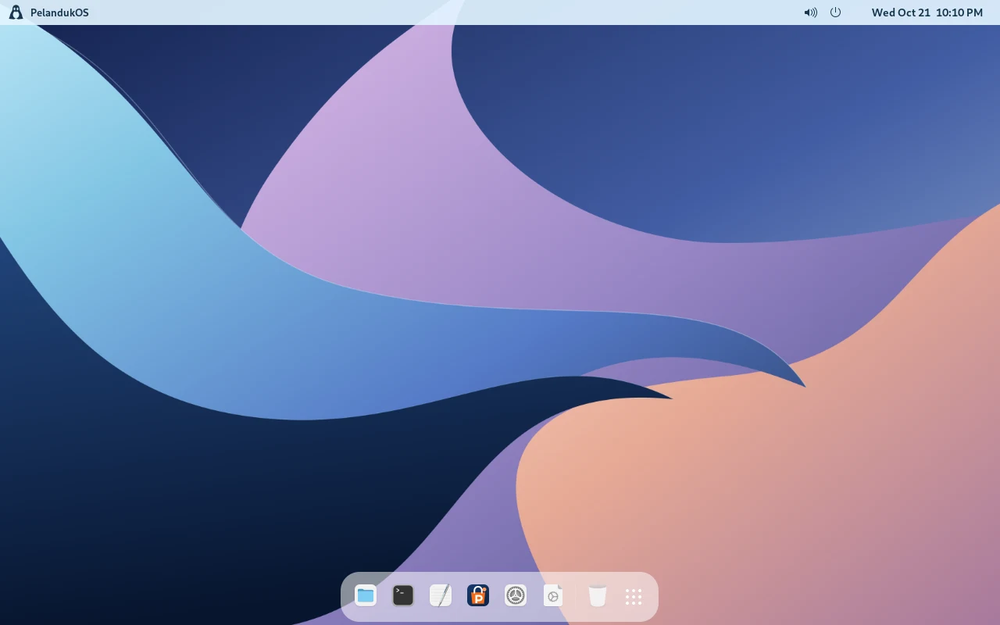
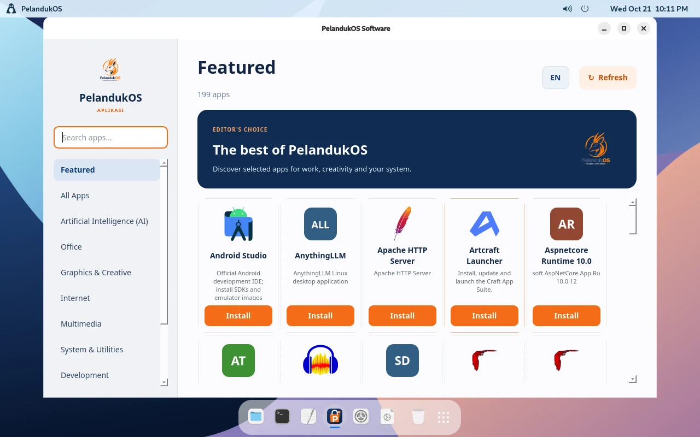
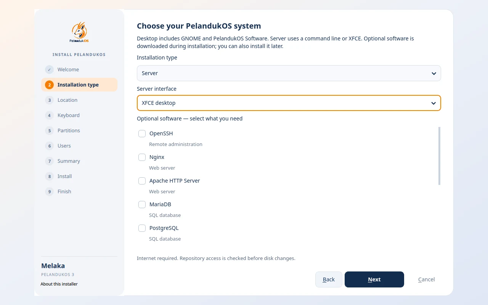

PELANDUKOS DESKTOP
Make room for your ideas.
GNOME, a clean workspace and PelandukOS Software. Choose the apps you need for work, design and everyday life.
- GNOME desktop
- PelandukOS Software
- Flatpak · Snap · AppImage

PelandukOSLINUX · MALAYSIAA familiar desktop. The freedom to create. Meet PelandukOS — a Debian-based Linux experience for your everyday work and your next server.

GNOME, a clean workspace and PelandukOS Software. Choose the apps you need for work, design and everyday life.
Choose Server in the installer, then select a command line or an XFCE desktop.
A terminal-only installation without a desktop. Build and administer your services from the command line.
Server → CLI only
A graphical workspace with XFCE for users who prefer desktop tools alongside the terminal.
Server → XFCE desktop
Select optional server software during installation: OpenSSH, Nginx or Apache, databases and more. Internet access is required for additional packages. These are installation profiles in the 3.5 preview; a separate Server ISO is not linked here.

Discover and install applications from your configured PelandukOS repository, in a native C++ / Qt app that speaks English and Bahasa Melayu.
Browse featured apps and categories, from office and creative tools to development and games.
View installed packages and package details before choosing your next app.
Refresh the APT catalog and install with system authorization through Polkit.

amd64 · V3 · 6.5 GB
Earlier release. Does not represent the 3.6 features shown above.